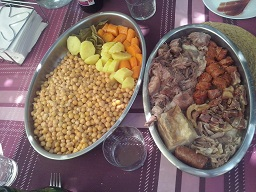

Cocido Madrileño

Ingredientes para 10 personas:
- 1 kg de jarete o morcillo
- 2 chorizos
- 300g de panceta salada
- 1 hueso de cerdo salado
- 1/4 kg de gallina
- 1 punta de jamón
- 700g de garbanzos
- 1 puerro
- 2 zanahorias
- 1 patata
- 1 trozo de repollo
Realización:
Pon la víspera a remojar los garbanzos, en una cazuela grande pon todos
los ingredientes menos el repollo. Ponlo en abundante agua a cocer
lentamente añadiendo si hace falta agua siempre caliente a la cocción,
cuando este cocido apartar las verduras y los garbanzos por un sitio
, la carne por otro y con el caldo hacer una sopa , cocer el repollo
aparte , se puede añadir un poco de caldo del repollo a la sopa.
Escurrir el repollo, rehogarlo con ajo y pimentón y acompañar los
garbanzos el que quiera. Servir primero la sopa, luego las
verduras y los garbanzos y después la carne.